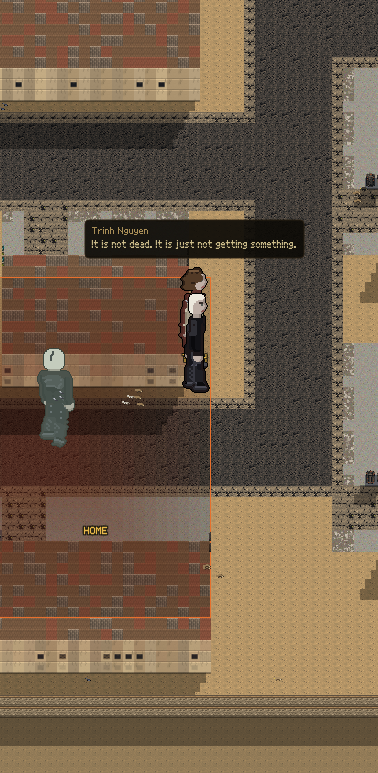
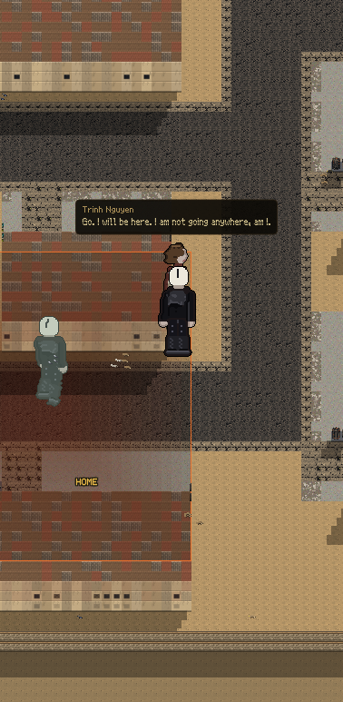

Both pictures are the walked street, from the game's own camera, same man, same spot.
"Origins at different difficulties." And: "only a 20% chance your character can die, else a debilitating injury, 30 to 40 days."


He does not say a number of days. A person does not talk like that. He carries a limp now that never quite goes, and he will still be carrying it in ten years.
| who you were | your crew | still useful |
|---|---|---|
| THE CASINO FLOOR your trade died with the city |
4 | 0 of 4 |
| THE EX-CONS drawn from every trade in the yard |
a mix | 11 of 15 |
| THE LINEMAN'S CREW you kept the power on |
4 | 4 of 4 |
| THE NURSE'S WARD you kept people alive |
4 | 4 of 4 |
I did not pick which one is hardest. It is counted: how many of your people still know something this valley can use. The casino floor scores zero, and that number was already sitting in the game weeks before you said the word origins. Nobody wrote it to make this work.
"I still cut the deck twice. There is no deck." — the dealer
"I can still park anything. There is nothing to park." — the valet
"I ran a room. I still count the room when I walk in." — the pit boss
"I worked a floor with four thousand people on it." — the floor man
Four people who were the best in the world at something nobody needs any more. That is the whole crew and that is the whole difficulty. The lineman's crew can fix a generator on day one. These four can read a room.